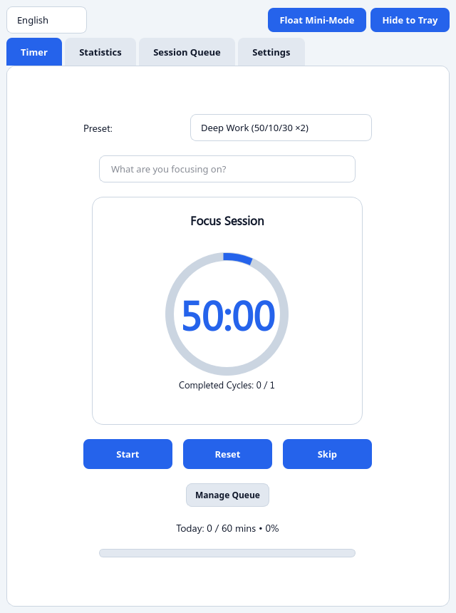
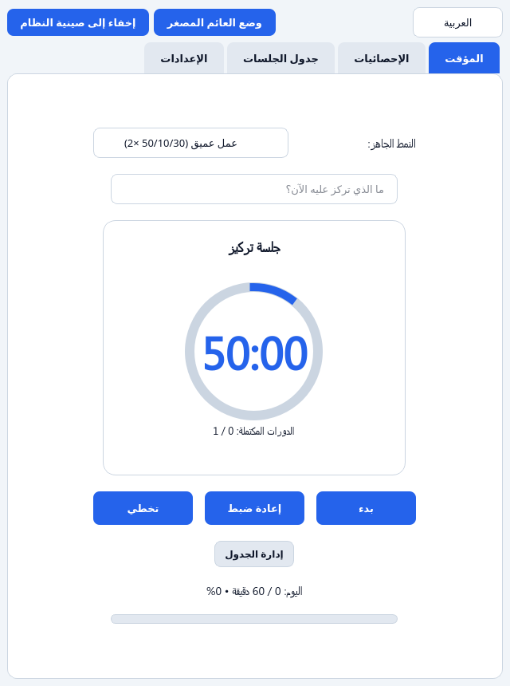

Take control of your focus sessions.
تحكم في جلسات تركيزك.
Customizable timers, multi-block queues, bilingual support, and more.
Professional Pomodoro Timer for Focus Management
Customizable timers, multi-block queues, bilingual support, and more.


Plan focus blocks, short and long breaks with optional task labels.
Always‑on‑top widget showing time, stage, and task.
Switch instantly between English and Arabic layout.
Default, Forest, Midnight, Sunset – choose what feels right.
Pure Python synthesized bell tones – no external files.
Track daily focus minutes and export session history.